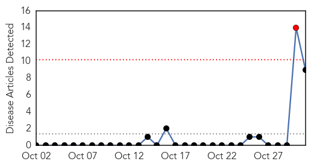
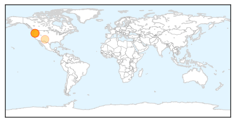

Bubonic Plague
30-Day Web Trend
1 alerts, 0 warnings

30-Day Twitter Trend
1 alerts, 0 warnings

Article Locations
Article Confidences
Top Articles:
- 0.950
- Bubonic plague: Oregon teen gets ‘Black Death’ from flea bite, officials warn
- 0.933
- Teenage Girl In Oregon Contracts Bubonic Plague After Hunting Trip
- 0.908
- Oregon Teenage Girl Contracts Bubonic Plague
- 0.881
- 16-Years Oregon Girl With bubonic plague Reported
- 0.848
- Oregon Teen Diagnosed With Devastating Disease
- 0.736
- Plague update: Crook County teen out of ICU
- 0.679
- Central Oregon builds experience with plague cases; Crook County girl was diagnosed quickly
- 0.612
- Health officials say Oregon teen has bubonic plague
- 0.541
- Health officials say bubonic plague case in Oregon is not a sign of a pandemic
Top Tweets:
-
No tweets found for Oct 31, 2015
Dengue Fever
30-Day Web Trend
0 alerts, 0 warnings

30-Day Twitter Trend
2 alerts, 3 warnings

Article Locations

Article Confidences

Top Articles:
- 0.997
- State View: The case of dengue management and its can of worms
- 0.992
- Colombia: Zika case count now 129
- 0.989
- Hong Kong officials issue dengue fever update
- 0.985
- Halloween celebrations continue in Taiwan despite looming health threat
- 0.922
- India: Nine out of 10 people unaware dengue transmitted by mosquitoes
- 0.676
- Dengue hits MPs’ hostel: Speaker orders immediate cleanup
Top Tweets:
- 0.589
- Flavivirus news: Bengaluru woman tested positive for dengue fever - Business Standard: Bengalur... https://t.co/L6MUT3Bx8V pathogenposse